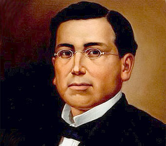

Batalla del 5 de mayo


 2
2 3
3 4
4 5
5 7
7 8
8
En México el 5 de Mayo se conmemora el día de la Batalla de Puebla, en la cual el ejército mexicano venció al ejército francés.
La historia narra que todo comenzó hacia el año de 1862. Benito Juárez quien recientemente había sido elegido Presidente de México, suspendió los pagos de la deuda externa por dos años, ya que el país tenía una crisis financiera; así los franceses, españoles e ingleses vinieron a México con el fin de cobrarse a la fuerza la deuda.
Pero los ingleses y los españoles se marcharon sin conseguir nada, en contraste los franceses no pensaban irse hasta haber triunfado, ya que Napoleón III pensaba establecer en México una monarquía favorable para Francia.
Las tropas francesas estaban muy bien equipadas y eran mucho más grandes que el ejercito Mexicano; por lo que Benito Juárez convocó a toda la población a que luchara, así se formó un ejército de aproximadamente 4800 hombres.
Fue el 5 de Mayo de 1862 cuando el General Laurencez al mando de las tropas francesas ordenó el asalto a los fuertes de Loreto y Guadalupe, que defendían la ciudad de Puebla al mando del General Ignacio Zaragoza; el ejercito invasor que fue rechazado con grandes pérdidas al intentar repetidas veces tomar las fortificaciones, al final tuvieron que abandonar el campo y retirarse vencidos y perseguidos por la caballería mexicana, la noticia del triunfo en Puebla llenó de entusiasmo a todo el país, moralmente levantó a el pueblo que se encontraba desanimado y temeroso por una posible invasión.

Antes del 5 de Mayo, el día 28 de abril de 1862 tuvo lugar un enfrentamiento conocido como la Batalla de las Cumbres entre el Ejército Expedicionario Francés y el Ejército Mexicano. En este conflicto hubieron cerca de 500 bajas francesas en contra de apenas 50 bajas mexicanas. Pese a esto, el Ejército Expedicionario francés consigue hacerse con el control del Paso de Acultzingo.
Después de la Batalla de las Cumbres el conde de Lorencez conservaba su confianza y mandó a decir a Napoleon III que: “Somos tan superiores a los mexicanos en organización, disciplina, raza, moral y refinamiento de sensibilidades, que le ruego anunciarle a Su Majestad Imperial, Napoleón III, que a partir de este momento y al mando de nuestros 6,000 valientes soldados, ya soy dueño de México”
El 2 de mayo parte el Ejército Expedicionario Francés desde San Agustín del Palmar en Veracruz con rumbo para cruzar la Sierra Madre Oriental y dirigirse hacia Puebla ya que era paso obligado para llegar a la capital del país.
Cabe señalar que el Partido Conservador apoyaba la Invasión francesa e incluso formaron parte de la guerrilla que atacó en varias ocasiones al Ejército de Oriente.
Otros generales mexicanos también participaron en la defensa de Puebla como es el caso de las tropas de Oaxaca dirigidas por Porfirio Díaz. El centro de la línea lo defendió Francisco Lamadrid con las tropas del Estado de México y San Luis Potosí. La izquierda se apoyó en el cerro de Acueyametepec ubicado en el norte de la ciudad y en cuya cumbre se ubicaban los Fuertes de Loreto y Guadalupe, con el general Miguel Negrete a la cabeza de la Segunda División de Infantería.

Durante la Segunda Intervención Francesa en Puebla, Ignacio Zaragoza visitó a las tropas en la borrasca de las cumbres de Acultzingo. En ese momento ya había reportes de tifo o tifus –no confundir con tifoidea– entre algunos de los soldados. Desgraciadamente, fue aquí que el general se contagió de lo que le quitaría la vida lejos del campo de batalla.
Después de entregar el mando del Ejército de Oriente al general Jesús González Ortega el 3 de septiembre de 1862, sus síntomas empeoraron. Cinco días después, el general falleció a sus 33 años de edad, lejos del campo de batalla. En su honor, Benito Juárez develó el 4 de mayo de 1868 un monumento póstumo en Panteón de San Fernando.
GENERAL IGNACIO ZARAGOZA
Encabezó la defensa mexicana frente a la ofensiva francesa encabezada por Carlos Latrille, mejor conocido como el Conde de Lorencez.

GENERAL MIGUEL NEGRETE
Es considerado por algunos historiadores como el verdadero héroe de la Batalla de Puebla. Durante la Guerra de Reforma participó del lado de los conservadores. Sin embargo, cuando la nación se vio invadida, se acogió a la amnistía que el Presidente Benito Juárez extendió a todos sus antiguos enemigos, incorporándose así a las filas republicanas.

GENERAL PORFIRIO DIAZ
Militar valiente de origen oaxaqueño, Díaz llenó su nombre de gloria con una destacada participación durante el 5 de Mayo.

GENERAL FELIPE BERRIOZABAL
Político, ingeniero, Ministro de Guerra y Marina; General de división. Sirvió de 1849 hasta el 1900 con lealtad en el Ejército mexicano, Felipe Berriozábal participó en la Primera intervención estadounidense en México, la Guerra de Reforma y la Segunda Intervención Francesa en México y formó parte de los gobiernos de Benito Juárez y Porfirio Díaz. Nacido en Zacatecas, Zacatecas, en 1827, realizó como ingeniero el proyecto hidráulico de canalización del Río Lerma.